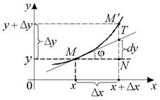

15.2.4. Геометрический смысл дифференциала

Рассмотрим функцию  .
Обозначения, приведенные на рисунке, соответствуют:
.
Обозначения, приведенные на рисунке, соответствуют:
.
Обозначения, приведенные на рисунке, соответствуют:,,
– касательная в точке  .
.
.Рассмотрим
,,
.
Дифференциал функции в
точке  есть приращение ординаты касательной
к графику функции в точке .
есть приращение ординаты касательной
к графику функции в точке .
в
точке есть приращение ординаты касательной
к графику функции в точке .